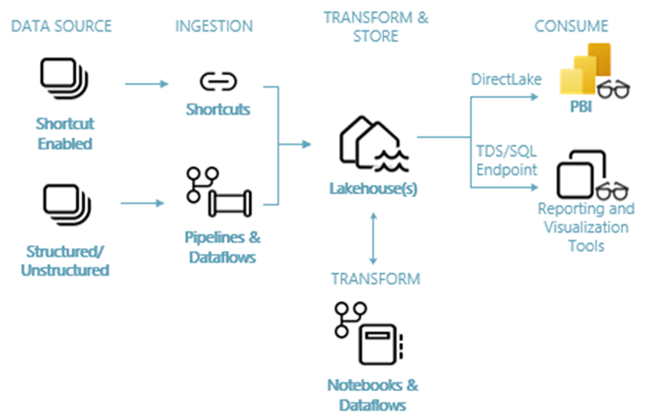

Lakehouse
개요 및 아키텍처
Microsoft Fabric은 데이터 이동에서 데이터 과학, 실시간 분석 및 비즈니스 인텔리전스에 이르기까지 모든 것을 다루는 엔터프라이즈를 위한 올인원 분석 솔루션입니다. 데이터 레이크, 데이터 엔지니어링 및 데이터 통합을 포함한 포괄적인 서비스 제품군을 모두 한 곳에서 제공합니다. 자세한 내용은 Microsoft Fabric란?을 참조하세요.
이 자습서에서는 데이터 취득에서 데이터 소비에 이르는 엔드 투 엔드 시나리오를 안내합니다. 다양한 환경과 통합 방법뿐만 아니라 이 플랫폼에서 작업할 때 제공되는 전문 및 시민 개발자 환경을 포함하여 Fabric에 대한 기본적인 이해를 구축하는 데 도움이 됩니다. 이 자습서는 참조 아키텍처, 기능 및 기능의 전체 목록 또는 특정 모범 사례의 권장 사항이 아닙니다.
시나리오
일반적으로 조직은 트랜잭션 및 구조적 데이터 분석 요구 사항에 맞게 최신 데이터 Warehouse를 구축해 왔습니다. 빅 데이터(반정형/비정형) 데이터 분석에 대한 데이터 Lakehouse도 필요합니다. 이 두 시스템이 병렬로 운영되면서 사일로 현상, 데이터 중복, 그리고 총 소유 비용 증가를 유발했습니다.
데이터 저장소의 통합과 Delta Lake 형식의 표준화를 사용하는 Fabric을 사용하면 사일로를 제거하고 데이터 중복을 제거하며 총 소유 비용을 크게 줄일 수 있습니다.
Fabric에서 제공하는 유연성을 통해 Lakehouse 또는 데이터 Warehouse 아키텍처를 구현하거나 함께 결합하여 간단한 구현으로 둘 다 최대한 활용할 수 있습니다. 이 자습서에서는 리테일 조직의 예를 들어 처음부터 끝까지 Lakehouse를 빌드합니다. 브론즈 계층에 원시 데이터가 있고, 실버 계층에 유효성이 검사되고 중복 제거된 데이터가 있으며, 골드 계층에 고도로 세련된 데이터가 있는 medallion 아키텍처를 사용합니다. 모든 업계의 모든 조직에 대해 Lakehouse를 구현하는 동일한 접근 방식을 취할 수 있습니다.
이 자습서에서는 리테일 도메인의 가상 Wide World Importers 회사의 개발자가 다음 단계를 완료하는 방법을 설명합니다.
Power BI 계정에 로그인하고 무료 Microsoft Fabric 평가판에 등록합니다. Power BI 라이선스 가 없는 경우 Power BI 무료 라이선스에 등록한 다음 Fabric 평가판을 시작할 수 있습니다.
조직에 대한 엔드 투 엔드 Lakehouse를 빌드하고 구현합니다.
Fabric 작업 영역 만들기.
Lakehouse를 만들기.
데이터를 수집하고, 데이터를 변환하고, Lakehouse에 로드합니다. Lakehouse 모드 및 SQL 분석 엔드포인트 모드에서 하나의 데이터 복사본인 OneLake를 탐색할 수도 있습니다.
SQL 분석 엔드포인트를 사용하여 Lakehouse에 연결하고 DirectLake를 사용하여 Power BI 보고서를 만들어 다양한 차원의 판매 데이터를 분석합니다.
필요에 따라 파이프라인을 사용하여 데이터 수집 및 변환 흐름을 오케스트레이션하고 예약할 수 있습니다.
작업 영역 및 기타 항목을 삭제하여 리소스를 정리합니다.
아키텍처
다음 이미지는 Lakehouse 엔드 투 엔드 아키텍처를 보여줍니다. 다음 표에는 두 가지 해당 구성 요소가 정리되어 있습니다.

-
데이터 원본: Fabric을 사용하면 간소화된 데이터 수집을 위해 Azure Data Services뿐만 아니라 다른 클라우드 기반 플랫폼 및 온-프레미스 데이터 원본에 빠르고 쉽게 연결할 수 있습니다.
-
수집: 200개 이상의 네이티브 커넥터를 사용하여 조직에 대한 인사이트를 빠르게 작성할 수 있습니다. 이러한 커넥터는 Fabric 파이프라인에 통합되며 데이터 흐름을 사용하여 사용자에게 친숙한 끌어서 놓기 데이터 변환을 활용합니다. 또한 Fabric의 바로 가기 기능을 사용하면 복사하거나 이동하지 않고도 기존 데이터에 연결할 수 있습니다.
-
변환 및 저장: Fabric은 Delta Lake 형식으로 표준화됩니다. 즉, 모든 Fabric 엔진은 데이터를 복제하지 않고 OneLake에 저장된 동일한 데이터 세트에 액세스하고 조작할 수 있습니다. 이 스토리지 시스템은 조직의 요구 사항에 따라 medallion 아키텍처 또는 데이터 메시를 사용하여 Lakehouse를 유연하게 빌드할 수 있습니다. 코드 우선 환경을 위해 파이프라인/데이터 흐름 또는 Notebook/Spark를 활용하여 데이터 변환을 위한 하위 코드 또는 코드 없음 환경 중에서 선택할 수 있습니다.
-
사용: Power BI는 보고 및 시각화를 위해 Lakehouse의 데이터를 사용할 수 있습니다. 각 Lakehouse에는 다른 보고 도구에서 Lakehouse 테이블의 데이터를 쉽게 연결하고 쿼리할 수 있도록 SQL 분석 엔드포인트라는 기본 제공 TDS 엔드포인트 가 있습니다. SQL 분석 엔드포인트는 사용자에게 SQL 연결 기능을 제공합니다.
Lakehouse의 하위 섹션
Fabric 작업영역 만들기
필수 조건
작업 영역 만들기
이 단계에서는 Fabric 작업 영역을 만듭니다. 작업 영역에는 Lakehouse, 데이터 흐름, Data Factory 파이프라인, Notebook, Power BI 의미 체계 모델 및 보고서를 포함하는 이 Lakehouse 자습서에 필요한 모든 항목이 포함됩니다.
- Power BI에 로그인합니다.
- 작업 영역, 새로운 작업 영역를 차례로 선택합니다.
데이터 저장소의 통합과 Delta Lake 형식의 표준화를 사용하는 Fabric을 사용하면 사일로를 제거하고 데이터 중복을 제거하며 총 소유 비용을 크게 줄일 수 있습니다.
Fabric에서 제공하는 유연성을 통해 Lakehouse 또는 데이터 Warehouse 아키텍처를 구현하거나 함께 결합하여 간단한 구현으로 둘 다 최대한 활용할 수 있습니다. 이 자습서에서는 리테일 조직의 예를 들어 처음부터 끝까지 Lakehouse를 빌드합니다. 브론즈 계층에 원시 데이터가 있고, 실버 계층에 유효성이 검사되고 중복 제거된 데이터가 있으며, 골드 계층에 고도로 세련된 데이터가 있는 medallion 아키텍처를 사용합니다. 모든 업계의 모든 조직에 대해 Lakehouse를 구현하는 동일한 접근 방식을 취할 수 있습니다.
이 자습서에서는 리테일 도메인의 가상 Wide World Importers 회사의 개발자가 다음 단계를 완료하는 방법을 설명합니다.
Power BI 계정에 로그인하고 무료 Microsoft Fabric 평가판에 등록합니다. Power BI 라이선스 가 없는 경우 Power BI 무료 라이선스에 등록한 다음 Fabric 평가판을 시작할 수 있습니다.
조직에 대한 엔드 투 엔드 Lakehouse를 빌드하고 구현합니다.
Fabric 작업 영역 만들기.
Lakehouse를 만들기.
데이터를 수집하고, 데이터를 변환하고, Lakehouse에 로드합니다. Lakehouse 모드 및 SQL 분석 엔드포인트 모드에서 하나의 데이터 복사본인 OneLake를 탐색할 수도 있습니다.
SQL 분석 엔드포인트를 사용하여 Lakehouse에 연결하고 DirectLake를 사용하여 Power BI 보고서를 만들어 다양한 차원의 판매 데이터를 분석합니다.
필요에 따라 파이프라인을 사용하여 데이터 수집 및 변환 흐름을 오케스트레이션하고 예약할 수 있습니다.
작업 영역 및 기타 항목을 삭제하여 리소스를 정리합니다.
아키텍처
다음 이미지는 Lakehouse 엔드 투 엔드 아키텍처를 보여줍니다. 다음 표에는 두 가지 해당 구성 요소가 정리되어 있습니다.
-
데이터 원본: Fabric을 사용하면 간소화된 데이터 수집을 위해 Azure Data Services뿐만 아니라 다른 클라우드 기반 플랫폼 및 온-프레미스 데이터 원본에 빠르고 쉽게 연결할 수 있습니다.
-
수집: 200개 이상의 네이티브 커넥터를 사용하여 조직에 대한 인사이트를 빠르게 작성할 수 있습니다. 이러한 커넥터는 Fabric 파이프라인에 통합되며 데이터 흐름을 사용하여 사용자에게 친숙한 끌어서 놓기 데이터 변환을 활용합니다. 또한 Fabric의 바로 가기 기능을 사용하면 복사하거나 이동하지 않고도 기존 데이터에 연결할 수 있습니다.
-
변환 및 저장: Fabric은 Delta Lake 형식으로 표준화됩니다. 즉, 모든 Fabric 엔진은 데이터를 복제하지 않고 OneLake에 저장된 동일한 데이터 세트에 액세스하고 조작할 수 있습니다. 이 스토리지 시스템은 조직의 요구 사항에 따라 medallion 아키텍처 또는 데이터 메시를 사용하여 Lakehouse를 유연하게 빌드할 수 있습니다. 코드 우선 환경을 위해 파이프라인/데이터 흐름 또는 Notebook/Spark를 활용하여 데이터 변환을 위한 하위 코드 또는 코드 없음 환경 중에서 선택할 수 있습니다.
-
사용: Power BI는 보고 및 시각화를 위해 Lakehouse의 데이터를 사용할 수 있습니다. 각 Lakehouse에는 다른 보고 도구에서 Lakehouse 테이블의 데이터를 쉽게 연결하고 쿼리할 수 있도록 SQL 분석 엔드포인트라는 기본 제공 TDS 엔드포인트 가 있습니다. SQL 분석 엔드포인트는 사용자에게 SQL 연결 기능을 제공합니다.
Lakehouse 빌드
필수 조건
Lakehouse 만들기, 샘플 데이터 수집 및 보고서 작성
데이터 수집
필수 조건
Lakehouse로 데이터 수집
데이터 준비
필수 조건
Lakehouse에서 데이터 준비 및 변환
보고서 작성
필수 조건
Microsoft Fabric에서 보고서 작성
리소스 정리
필수 조건
Fabric 리소스 정리
Data Science
개요
데이터 과학 프로젝트의 수명 주기에는 일반적으로 다음 단계(종종 반복적으로)가 포함됩니다.
- 비즈니스 이해
- 데이터 취득
- 데이터 탐색, 정리, 준비 및 시각화
- 모델 학습 및 실험 추적
- 모델 채점 및 인사이트 생성
각 단계의 목표 및 성공 기준은 공동 작업, 데이터 공유 및 문서화에 따라 달라집니다. Fabric 데이터 과학 환경은 원활한 방식으로 협업, 데이터 획득, 공유 및 소비를 가능하게 하는 여러 기본 제공 기능으로 구성되어 있습니다.
이 자습서에서는 은행 고객 10,000명의 이탈 상태를 포함하는 데이터 세트를 탐색, 정리 및 변환하는 작업을 맡은 데이터 과학자의 역할을 수행해 봅니다. 그런 다음, 기계 학습 모델을 빌드하여 어떤 은행 고객이 이탈할 가능성이 있는지 예측합니다.
다음 작업을 수행하는 방법을 알아봅니다.
- 데이터 과학 시나리오에 Fabric Notebook 사용
- Apache Spark를 사용하여 Fabric 레이크하우스에 데이터 수집
- 레이크하우스 델타 테이블에서 기존 데이터 로드
- Apache Spark 및 Python 기반 도구를 사용하여 데이터를 정리하고 변환
- 다양한 기계 학습 모델을 학습하기 위한 실험 및 실행 만들기
- MLflow 및 Fabric UI를 사용하여 학습된 모델을 등록하고 추적
- 대규모로 채점을 실행하고 예측 및 유추 결과를 레이크하우스에 저장
- DirectLake를 사용하여 Power BI에서 예측 결과 시각화
아키텍처
이 자습서 시리즈에서는 다음과 같은 간소화된 엔드투엔드 데이터 과학 시나리오를 소개합니다.
- 외부 데이터 원본에서 데이터 수집
- 데이터 탐색 및 정리
- 기계 학습 모델 학습 및 등록
- 일괄 처리 채점 수행 및 예측 저장
- Power BI에서 예측 결과 시각화

데이터 과학 시나리오의 다양한 구성 요소
데이터 원본
Fabric을 사용하면 Azure Data Services, 다른 클라우드 플랫폼 및 온프레미스 데이터 원본에 쉽고 빠르게 연결하여 데이터를 수집할 수 있습니다. Fabric Notebook을 사용하면 기본 제공 레이크하우스, Data Warehouse, 의미 체계 모델 및 다양한 Apache Spark 및 Python 지원 사용자 지정 데이터 원본에서 데이터를 수집할 수 있습니다. 이 자습서 시리즈는 레이크하우스에서 데이터를 수집하고 로드하는 데 중점을 둡니다.
탐색, 정리 및 준비
Fabric의 데이터 과학 환경은 Spark의 기본 제공 환경뿐만 아니라 데이터 랭글러 및 SemPy 라이브러리와 같은 Python 기반 도구를 사용하여 데이터 정리, 변환, 탐색 및 기능화를 지원합니다. 이 자습서에서는 Python 라이브러리 seaborn을 사용한 데이터 탐색과 Apache Spark를 사용한 데이터 정리 및 준비를 소개합니다.
모델 및 실험
Fabric을 사용하면 실험 추적 및 모델 등록/배치를 위해 MLflow와 원활하게 통합된 내장된 실험 및 모델 항목을 사용하여 기계 학습 모델을 학습, 평가 및 채점할 수 있습니다. Fabric은 또한 PREDICT(대규모 모델 예측)를 통해 비즈니스 인사이트를 얻고 공유할 수 있는 기능을 제공합니다.
스토리지
Fabric은 Delta Lake를 기반으로 표준화됩니다. 즉, Fabric의 모든 엔진이 레이크하우스에 저장된 동일한 데이터 세트와 상호 작용할 수 있습니다. 이 스토리지 계층을 사용하면 파일 기반 스토리지와 테이블 형식을 모두 지원하는 구조화된 데이터와 구조화되지 않은 데이터를 모두 저장할 수 있습니다. 저장된 데이터 세트 및 파일은 Notebook 및 파이프라인과 같은 모든 Fabric 환경 항목을 통해 쉽게 액세스할 수 있습니다.
분석 및 인사이트 제공
레이크하우스의 데이터는 업계를 선도하는 비즈니스 인텔리전스 도구인 Power BI에서 보고 및 시각화를 위해 사용할 수 있습니다. 레이크하우스에 유지되는 데이터는 Spark 또는 Python 네이티브 시각화 라이브러리(예: matplotlib, seaborn, plotly 등)를 사용하여 Notebook에서 시각화할 수도 있습니다. 의미 체계 데이터 모델, 종속성 및 위반, 분류 및 회귀 사용 사례에 대해 기본 제공된 풍부한 작업별 시각화를 지원하는 SemPy 라이브러리를 사용하여 데이터를 시각화할 수도 있습니다.